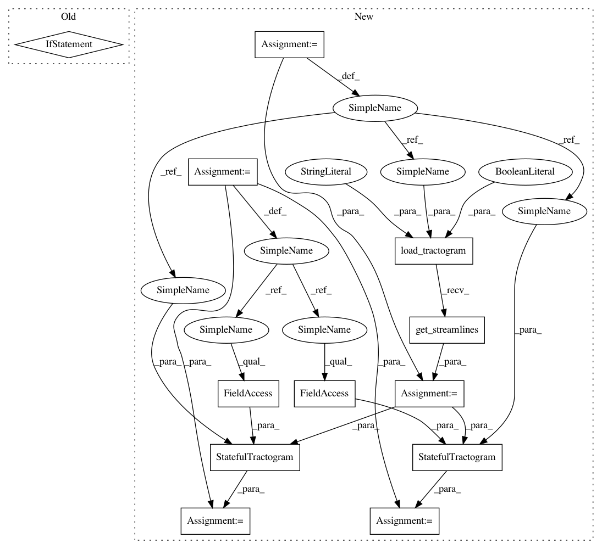

23a07e8601cbdba5ece453864bc6d11e3431543e,dipy/stats/tests/test_analysis.py,,test_ba,#,21
Before Change
with TemporaryDirectory() as dirpath:
streams, hdr = nib.trackvis.read(get_fnames("fornix"))
fornix = [s[0] for s in streams]
f = Streamlines(fornix)
After Change
def test_ba():
with TemporaryDirectory() as dirpath:
data_path = get_fnames("fornix")
fornix = load_tractogram(data_path, "same",
bbox_valid_check=False).get_streamlines()
f = Streamlines(fornix)
mb = os.path.join(dirpath, "model_bundles")
os.mkdir(mb)
sft = StatefulTractogram(f, data_path, Space.RASMM)
save_tractogram(sft, os.path.join(mb, "temp.trk"),
bbox_valid_check=False)
rb = os.path.join(dirpath, "rec_bundles")
os.mkdir(rb)
sft = StatefulTractogram(f, data_path, Space.RASMM)
save_tractogram(sft, os.path.join(rb, "temp.trk"),
bbox_valid_check=False)
ob = os.path.join(dirpath, "org_bundles")
os.mkdir(ob)
sft = StatefulTractogram(f, data_path, Space.RASMM)
save_tractogram(sft, os.path.join(ob, "temp.trk"),
bbox_valid_check=False)
dt = os.path.join(dirpath, "dti_measures")
In pattern: SUPERPATTERN
Frequency: 3
Non-data size: 12
Instances
Project Name: nipy/dipy
Commit Name: 23a07e8601cbdba5ece453864bc6d11e3431543e
Time: 2019-07-23
Author: francois.m.rheault@usherbrooke
File Name: dipy/stats/tests/test_analysis.py
Class Name:
Method Name: test_ba
Project Name: nipy/dipy
Commit Name: 23a07e8601cbdba5ece453864bc6d11e3431543e
Time: 2019-07-23
Author: francois.m.rheault@usherbrooke
File Name: dipy/workflows/tests/test_stats.py
Class Name:
Method Name: test_bundle_analysis_population_flow
Project Name: nipy/dipy
Commit Name: 23a07e8601cbdba5ece453864bc6d11e3431543e
Time: 2019-07-23
Author: francois.m.rheault@usherbrooke
File Name: dipy/stats/tests/test_analysis.py
Class Name:
Method Name: test_ba
Project Name: nipy/dipy
Commit Name: 23a07e8601cbdba5ece453864bc6d11e3431543e
Time: 2019-07-23
Author: francois.m.rheault@usherbrooke
File Name: dipy/workflows/tests/test_align.py
Class Name:
Method Name: test_slr_flow